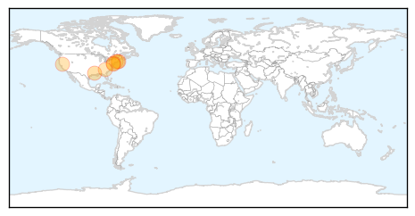
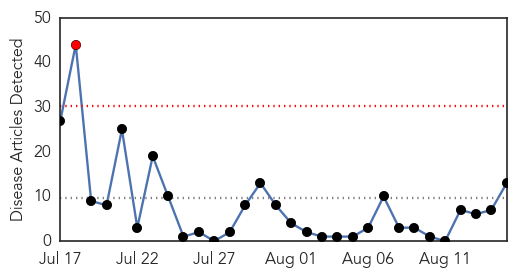

West Nile Virus
30-Day Web Trend
0 alerts, 0 warnings

30-Day Twitter Trend
0 alerts, 0 warnings

Article Locations
Article Confidences
Top Articles:
- 0.998
- Mosquito-borne illness chikungunya makes first appearances in La.
- 0.969
- Marion, Rochester mosquitoes test positive for EEE
- 0.968
- Delaware's First Finding of West Nile Virus in Wild Birds Report
- 0.945
- DNREC: First Case of West Nile Virus Detected in Delaware
- 0.890
- Two dead from West Nile virus in Sutter; Butte cases up to five
- 0.853
- Connecticut having mild mosquito season so far
- 0.820
- 2 confirmed cases of equine disease found in Darlington, Horry c
- 0.785
- West Nile virus found in Rhode Island mosquitoes
Top Tweets:
-
No tweets found for Aug 15, 2014
Chikungunya
30-Day Web Trend
1 alerts, 0 warnings

30-Day Twitter Trend
0 alerts, 0 warnings

Article Locations

Article Confidences

Top Articles:
- 0.997
- Vaccine for chikungunya infection shows promise in first test
- 0.994
- Chikungunya test vaccine shows promise: makers
- 0.993
- US assesses virus of the Caribbean
- 0.992
- Smart Woman: Chikungunya Vaccine - Story
- 0.984
- CMO: Chikungunya Could Be Around For The Next 12 Months:: The St. Kitts-Nevis Observer
- 0.984
- 4 New Locally Transmitted Chikungunya Cases Confirmed in Jamaica
- 0.978
- Chikungunya Virus Cases Rise In Our Area; As Health Officials Are Testing A New Vaccine To Prevent The Illness « CBS Philly
- 0.963
- Scientists develop new Chikungunya vaccine
- 0.954
- New vaccine against chikungunya gives promising results
- 0.939
- Officials warn: Remove standing water to avoid Chikungunya outbreak
- 0.883
- Chikungunya cases in Jamaica now at 10
- 0.712
- As many as 80 infected with Chikungunya -- TT health minister
- 0.675
- Fuad: As many as 80 infected with Chikungunya
Top Tweets:
-
No tweets found for Aug 15, 2014